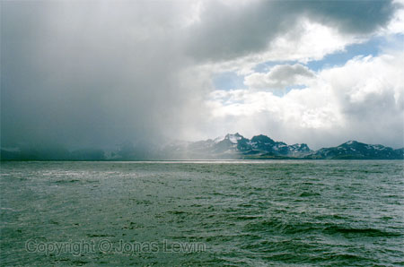
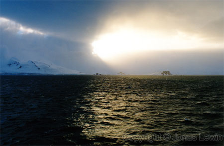
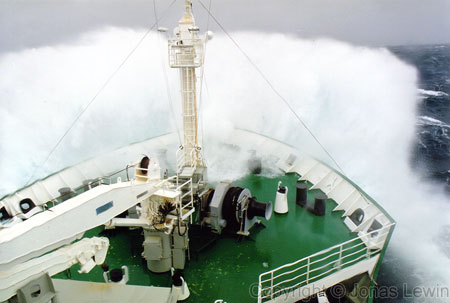
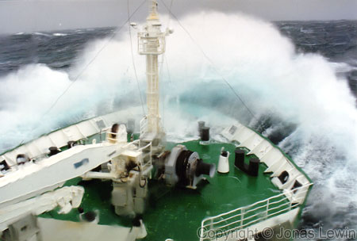
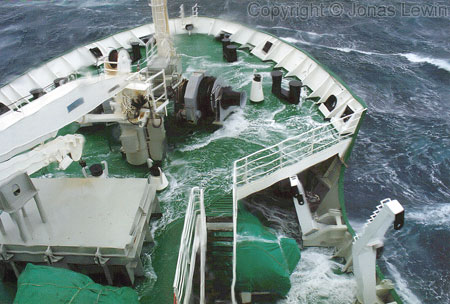
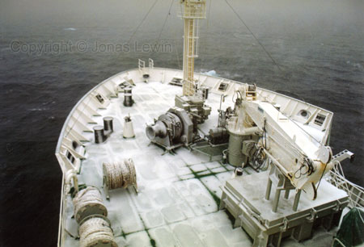
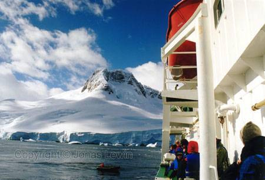
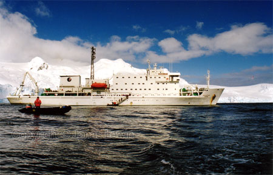
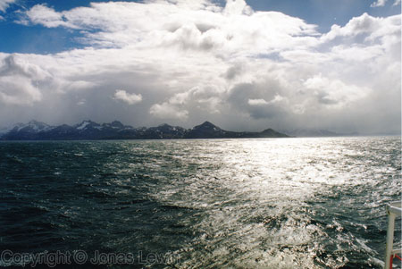
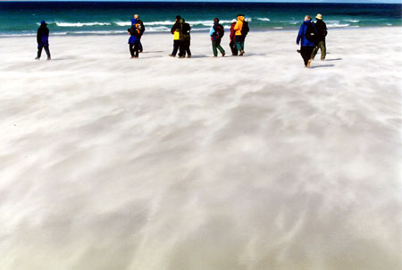

|
Weather in Antarctica
The
weather can change quite fast. From sunshine and a very nice day, to fog
and/or rain in a few (and I mean a few) minutes.
 Some times it was a bit windy. Or should I say, most of the times it was quite windy, and other times it was just storm and hurricane.
When I was leaning on the ship railing, it was at the height of my chest. Do
the math, and figure out the height of the waves.
For
some reason we where not allowed to go the deck. "It's not safe" they said.
Nonsense... ... A little bit of water never hurt any one. The temperature of the water is around -1 degree.
But you must admit, that this would have been a cool way of going fishing.
Just "diving in with the ship" and collecting a scoop of water.
Other
days, it was not slippery from stormy weather, but for other obvious
reasons. This is salt water that froze, and some snow. But all the bad weather made me appreciate good weather much more. I was ready to board the zodiacs as one of the first people when we arrived in Antarctica. I had no time to waste. Quite often, I tried to stay behind, and take the last zodiacs back from shore to the ship.
And after coming back, I felt like going up to the bridge (or actually
outside the bridge) to see some more of mother nature. The ship we called home this trip. This is a good picture for measurements. The guy standing in the zodiac in the front, compared to the zodiac at the end of the gangway, and the people walking down the gangway.
I guess that you get a feeling for how big the waves where in the above
pictures.
The
ocean is very nice when the sun is shining. I almost didn't care if it was
windy or not. It was just nice.
The
beach on Saunders Island. Paradise on earth. Why? Because it has Penguins,
and it's the most beautiful beach I have ever seen. |